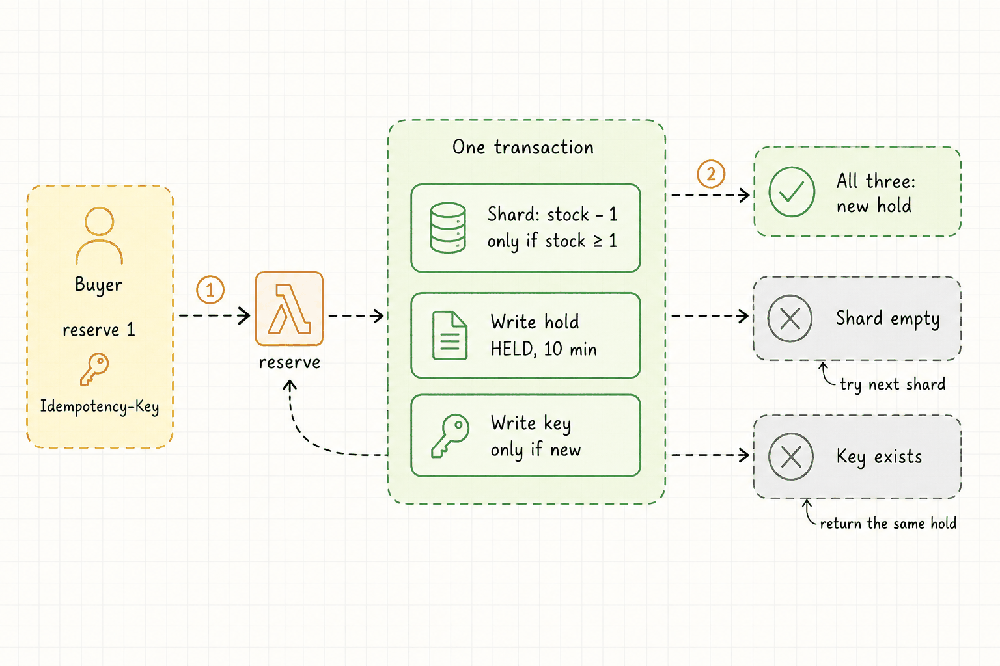
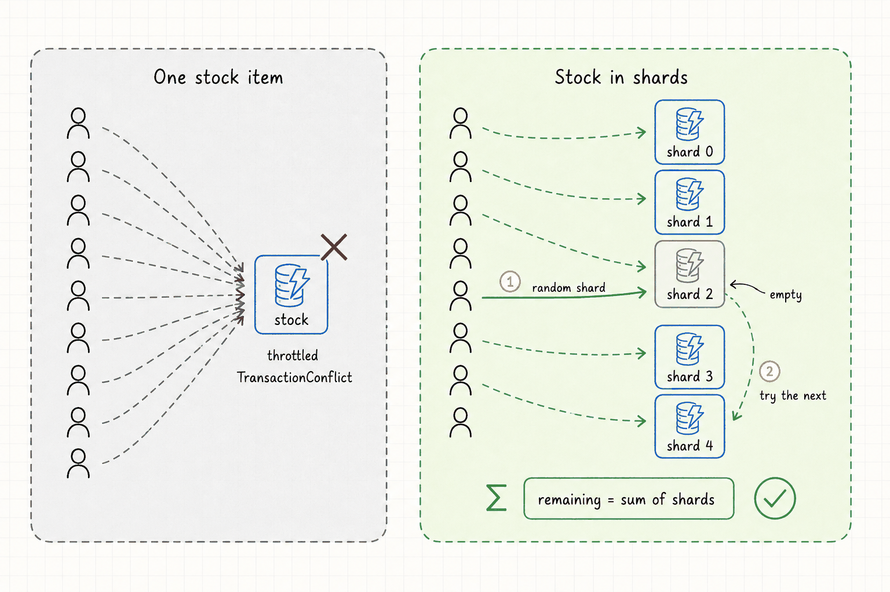
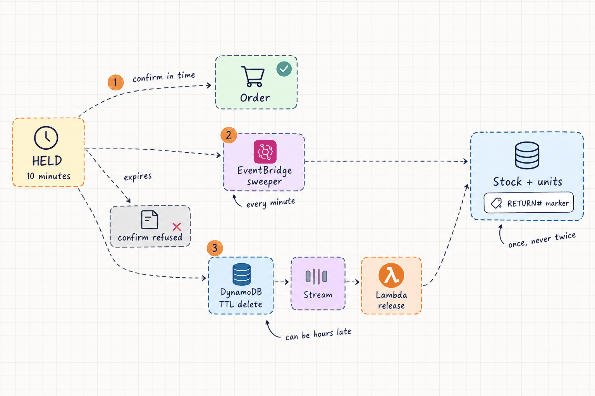

Most of my client work is servers that run all day. This lab is the opposite shape: nothing runs until a buyer shows up, and then everyone shows up at once. The job is small and strict. Sell every unit exactly once, while far more people than there are units press the same button.
The situation
This is a personal lab, not client work. It has no users, and it hasn't been deployed yet. Every number on this page is a design value, a documented AWS limit or a list price. The load tests are written. Until each one has run against a real deployment, it says "Not run" here, and the results go up as measured, including the misses.
| Part | State |
|---|---|
| Lambdas: reserve, confirm, get_sale, release, sweeper | Written, 36 unit tests pass, ruff clean |
| Terraform: bootstrap, table, functions, API, alarms | Written, passes fmt, validate, tflint, trivy |
| CI: plan on PR, approved apply, Lambda tests | Written, passes actionlint |
| Seed script, five k6 tests, runbooks | Written |
| Deployed to AWS | Not yet |
| Load tests | Not run |
The problem
The ten-user version is three lines: read the stock, check it's above zero, write it back minus one. Put 10,000 buyers on 1,000 units in the same few seconds and five things go wrong.
- Overselling. Two buyers read "1 left" at the same moment, and both buy it.
- The hot item. Every buyer writes the same stock item, and one DynamoDB partition has a write limit.
- Late TTL. Unpaid holds should expire and go back on sale. DynamoDB's TTL deletes them, but it can run hours late.
- Retries and double clicks. A buyer who clicks twice, or a client that retries a timeout, must not get two holds.
- Failing politely. When the burst is bigger than the system, buyers should get a clear "try again", not errors, and the bill should stay small.
What I built
One HTTP API in front of three functions: reserve holds units for ten minutes, confirm turns a hold into an order (a stand-in for payment), and get_sale reads what's left. Two more functions return stock from holds nobody paid for. Everything lives in one DynamoDB table, billed on demand, so idle time costs next to nothing.
1. Two buyers, one last unit
The fix for overselling is to never read before writing. The stock check is a condition on the write itself: take qty from the stock only if the stock is at least qty. DynamoDB applies the condition and the write as one step, so when two buyers race for the last unit, one write succeeds and the other's condition fails.
That update runs inside a transaction with two more writes: the hold, and a record of the buyer's Idempotency-Key. All three happen, or none do. If the transaction is cancelled, DynamoDB says which item failed, and that tells the function what to answer. A failed stock condition means this shard is empty. A failed key condition means the buyer already has a hold.
# [0] stock, [1] hold, [2] idempotency key: all or nothing
{"Update": {"Key": shard_key(sale_id, shard),
"UpdateExpression": "SET stock = stock - :qty",
"ConditionExpression": "stock >= :qty"}},
{"Put": {"Item": hold}},
{"Put": {"Item": idempotency_record,
"ConditionExpression": "attribute_not_exists(pk)"}},

One transaction for stock, hold and key
A conditional decrement, then a separate hold write
Why: With two writes, a function that dies between them has taken a unit with no hold to give it back. The transaction closes that gap. The cost is that transactional writes are billed at double rate: a reservation uses about 7 write units instead of about 4.
2. The hot item
A single DynamoDB partition handles about 1,000 write units a second, and a transactional write costs two. So if every buyer decrements the same stock item, the whole sale runs through one partition, with a ceiling of roughly 500 reservations a second on paper. There is a second limit before that one: transactions that touch the same item at the same moment cancel each other with a TransactionConflict.
So the stock is split across N shard items. Each reservation starts at a random shard. If that shard can't cover the order, it tries the others in random order, and it only answers "sold out" after every shard has said no. A conflict gets two more tries on that shard, with a few milliseconds of random wait. After that the answer is a 429, not "sold out", because the function doesn't actually know the shard is empty.
Two smaller hot spots got the same treatment. The sale's metadata never changes after seeding, so each warm function reads it once and keeps it. The index of live holds is keyed by one of 10 buckets rather than a single value, so it doesn't become the new hot partition.

Stock split across N shard items
One stock counter per sale
Why: It spreads the writes across items and partitions. The cost shows near sell-out: the last units end up scattered. A buyer who wants 2 can be told "sold out" while three shards each hold 1, because one order comes from one shard. Reading the stock means summing every shard. The hot-key test runs the same burst against 1 shard and against 10 to measure what the split is actually worth.
3. TTL that runs late
A hold lasts ten minutes. Its item carries a TTL, but DynamoDB deletes expired items in the background, and that can happen hours, even days, after the expiry time. Until then, the units are stuck in a hold nobody can pay for. That's worst in the last minutes of a sale, which is exactly when they matter. So TTL is only cleanup here, and three other things handle expiry:
- Confirm checks the time itself. The confirm write has a condition that the hold is still
HELDandexpires_atis in the future. An expired hold gets a 409 even if its item still exists. - A sweeper runs every minute. It reads a sparse index that only contains live holds, deletes the expired ones and puts their units back.
- A stream consumer catches TTL deletes. When TTL does delete a hold that was never confirmed, the table's stream hands the old item to a function that returns its units. It only acts on deletes made by DynamoDB's TTL process, and an event filter means it's only invoked for those.
The sweeper and the stream can both see the same hold, and stream batches are retried on failure. So returning stock has to be safe to run twice. Each return writes a RETURN#<hold> marker in the same transaction as the stock increment, on the condition that the marker doesn't exist yet. The second attempt fails on the marker and changes nothing.

A sweeper and the TTL stream, both returning stock
Relying on TTL deletes alone
Why: TTL alone keeps units locked for as long as TTL lags. The sweeper is scheduled to bring them back within a minute or two of expiry, and the stream covers anything TTL deletes first. The cost is two code paths that can reach the same hold, which is why every return is idempotent.
If the stream consumer keeps failing on a batch, it splits the batch to isolate the bad record, retries five times, then sends the batch's position to a dead-letter queue, which raises an alarm. That message holds stream positions, not the records. They have to be replayed within the stream's 24-hour retention, or those units stay held. The replay tool isn't written yet.
4. Retries and double clicks
Every reservation needs an Idempotency-Key header. The key is written in the same transaction as the hold, on the condition that it's new. The same key again gets a 200 with the original hold, never a second one. Only one transaction can write the key, so even 50 copies arriving at once should make one hold; the idempotency test checks exactly that. Reusing a key for a different request gets a 422. Keys expire after 24 hours.
This also covers a retry the buyer never sees. If the SDK times out after DynamoDB has already committed, its retry fails on the key condition and returns the hold that was just made.
5. Failing politely
When a burst is bigger than the system, I want the extra buyers to get a 429 with a Retry-After header, not a 5xx. There are four layers:
- API Gateway stage throttling. Past the rate and burst limits, API Gateway answers 429 itself and no function runs.
- The function's own 429. A DynamoDB throttle, or shards that keep conflicting, becomes a 429 with
Retry-After: 1. - A cap on the table. The on-demand table has a maximum throughput, so a runaway test is throttled instead of billed.
- Reserved concurrency, off by default. New accounts can have a Lambda concurrency quota as low as 10, and Lambda refuses any reservation that leaves fewer than 100 unreserved. So it's a variable that defaults to null, and the README says why.
One SDK retry, then a 429 to the client
The AWS SDK's default retries
Why: A throttled table needs less traffic. Default retries turn every request into several at exactly the wrong moment. Handing the wait to the client, with jitter, spreads the retries out. The cost is that buyers see more 429s, and a client has to handle them.
Least privilege down to the key
Each function has its own IAM role, and each role only reaches the key prefixes that function uses, through the dynamodb:LeadingKeys condition. confirm can update holds and nothing else. reserve can't delete anything. Only the sweeper can delete a hold. CI reaches AWS through GitHub OIDC with a read-only role for plans and a separate apply role behind a required reviewer, so there are no AWS keys stored in GitHub.
Load tests
Five k6 tests, one per problem. Each writes a JSON results file and has a runbook in the repo, with fields for the date, commit, numbers and cost of the run. None has run yet.
| Test | What it checks | Result |
|---|---|---|
oversell | 10,000 buyers race for 1,000 units. Count the units sold beyond the stock. | Not run |
hot-key | The same burst against 1 shard and 10. Compare throttled requests and p95. | Not run |
ttl-return | Unconfirmed holds all come back, exactly once, with the sweeper on and with it off. | Not run |
idempotency | One request sent 50 times at once with the same key creates one hold. | Not run |
burst | Zero to peak in 5 seconds. Error rate, p95 and cold starts at the start of the burst. | Not run |
What it costs
Close to nothing while idle. There's no always-on compute and the table is on demand. While the lab is deployed, the standing charges are 14 CloudWatch alarms and a dashboard, pro-rated by the hour. A load test is paid per request. I'll record what each run actually cost in its runbook.
| Resource | Approx. price |
|---|---|
| HTTP API requests | ~$1.00 per million |
| Lambda requests (arm64) | ~$0.20 per million |
| Lambda compute (arm64) | ~$0.0000133 per GB-second |
| DynamoDB on-demand writes | ~$0.625 per million units |
| CloudWatch alarm | ~$0.10 per alarm-month |
On-demand list prices (us-east-1) used for planning, not a bill.
The lab is destroyed after every session. Only the bootstrap layer stays: the state bucket, its KMS key and the CI roles. An AWS Budget alert exists before the first apply.
What's left
- Deploy it and run the five tests. Results go in the runbooks and on this page as measured, including any that fall short.
- A replay tool for the dead-letter queue, so a failed stream batch can be reprocessed before the stream drops it.
- Tuning from data. Shard count, stage limits and function memory are starting values. The hot-key and burst tests should set them.
What production would add
Some gaps are on purpose, to keep the lab small and cheap. Before real buyers I'd close them:
- Authentication. A JWT authorizer, so keys and per-buyer limits are tied to a user. Today one client can hold as many units as it can send requests for.
- CloudFront and WAF in front. WAF can't attach to an HTTP API directly. CloudFront could also cache the stock read for a second, so repeat reads never reach the table.
- A waiting room for drops far bigger than this one, so buyers queue outside instead of hitting the API all at once.
- Real payments, with confirm as one step of a flow that can fail and give the units back.
- Customer-managed keys and deletion protection on the table, and alarms routed to a pager instead of email.